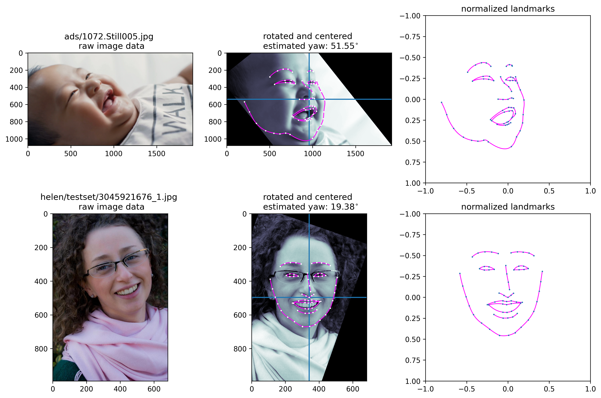

This project is an exploration into the application of classical machine learning models such as SVC, Logistic Regression, and Naive Bayes to classify adult vs infant faces using facial landmark data. The data used in this analysis is provided by InfAnFace: Bridging the Infant--Adult Domain Gap in Facial Landmark Estimation in the Wild.
In order to reduce the influence of extrinsic factors (e.g. image size, camera angle, and subject pose) we derived additional metadata from the ground truth landmarks for InfAnFace and 300W data. These derived features generally conform much more closely to the type of input statistical learning models are designed to process.
These derived features include:
For the full list of derived features, please see the Derived Features Reference section of the Preprocessing markdown file.
Some models struggled to classify images accurately from just raw landmark coordinates, but by using Normalized Landmarks and Estimated Rotations, we were able to reduce the noise in the data (improving model accuracy) and reduce the influence of extrinsic factors, increasing our confidence that the models are making valid distinctions based on meaningful features.

Our best "high" dimensional model is a PCA > SVC model with 55 principal components.
To generate this result we applied PCA to the normalized landmark coordinates and used SVC for classification. We used cross-validated hyperparameter tuning to find the best number of principal components, SVC regularization and SVC kernel coefficient.
For further details on hyperparameter tuning and plotting of the principal components, please visit svc.md.
Our best "mid" dimensional model is logistic regression with 7 features.
To generate this result, we derived pair-wise euclidian distances from the normalized landmark coordinates. Then, we applied forward feature selection to pick out the 6 most relevant distances. Finally, using recursive feature selection and resampling, we combined the 6 distances with the "box ratio" predictor and applied logistic regression.
For further details on hyperparameter tuning and histograms of the distrobutions, please visit logreg.md. Please visit feature_election.md and sampling.md for details on those methods.
Some of our best low-dimensional models use just 2 features.
This model uses two derived features inspired by the statistics in TABLE II on page 3 of the InfAnFace paper:
(box_width)/(box_height) (using rotated coordinates)For further details around this classifier, please visit bayes.md.
Our best "low" dimensional model is SVC with two features inspired by the statistics in TABLE II on page 3 of the InfAnFace paper:
(box_width)/(box_height) (using rotated coordinates)For further details on hyperparameter tuning and plotting of the principal components, please visit svc.md.
Challenges
Some of the biggest challenges in this project were around pre-processing and normalizing the data. These landmark data are derived from a 2D projection of a 3D subject and sometimes the subject may be turned or tilted. Sometimes the camera may be closer or further from the subject and sometimes the resolution of the image may be larger or smaller to a significant extent. All of these extrinsic factors can have a large impact on the landmarks' coordinate values. We tried to account for these differences by "normalizing" the landmark points, rotating and scaling the points to the "bounding box" of the face. This allowed us to better compare the faces to one another, and gave us assurance that our classifiers are more likely to distinguish actual features of the faces (rather than those extrinsic features, like scale and rotation). For more information on the specific pre-processing steps done, please refer to preprocessing.md.
Conclusion
After testing out a collection of supervised machine learning models with different sets of features, pre-processing steps, resampling, feature selection, and dimensional reduction methods we concluded that classical machine learning is a powerful way to classify facial landmark data. We also found that domain knowledge can help inform feature engineering, which ended up being a critical step in our process. However, we realize that due to the nature of the 2-D data points, there are certain normalizing transformations that we could not do. There also could be other externalities influencing the accuracy scores of our models.
Future work
We may be able to understand some of our models better by inspecting specific images that are harder
to classify correctly.
We might find a way to quantify the degree of certainty in our classifiers (e.g. "conformal prediction")
and sort misclassified images for review; perhaps a pattern would emerge, indicating a common mode
of failure.
For example, one of our best predictors across models was boxratio, but we expect this
feature to be artificially decreased for extreme angles of rotation about the y-axis; perhaps an
infant face in profile (i.e. turned 90 degrees from the camera) would have a ratio indistinct from
that of an adult face; perhaps a prioritized list of problematic images would make this evident.
We might find ways to improve our API for plotting images, to make this sort of review easier.
We would also like to extend our local image caching solution to retrieve 300W faces
as easily as the InfAnFace images.
Acknowledgements
For more information about the contributors of this project, please visit the project repository.
The data used in this analysis comes from InfAnFace: Bridging the Infant--Adult Domain Gap in Facial Landmark Estimation in the Wild.
Wan, M., Zhu, S., Luan, L., Prateek, G., Huang, X., Schwartz-Mette, R., Hayes, M., Zimmerman, E., & Ostadabbas, S. "InfAnFace: Bridging the infant-adult domain gap in facial landmark estimation in the wild." 26th International Conference on Pattern Recognition (ICPR 2022).
Additional thanks to Dr. Michael Wan for his feedback and guidance on our project.